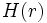

![[Main Page]](../../rsrc/bci2000logo.svg)
Implementing an advanced Matlab-based Filter
Programming Tutorial
This tutorial, written by Robert Oostenveld, shows you how to implement a filter based on a beamforming algorithm where the beamformer is updated in real-time, based on the covariance matrix of its input data.
What is Matlab?
“MATLAB® is a high-level language and interactive environment that enables you to perform computationally intensive tasks faster than with traditional programming languages such as C, C++, and Fortran.”
Advantages of Matlab
- interactive
- simple syntax
- no explicit declaration of variables and functions required
- garbage collection
- standard for neuroscience data analysis
- many toolboxes available
- many algorithms implemented
- many data visualisation tools
Disadvantages of Matlab
- slower than compiled code
- default double precision
- not open source
- expensive
- language suitable for RAD, not so much for large projects
Real time processing for BCI
- EEG alpha oscillation @10Hz
- duration ~100 ms
- decision every xx ms?
- Processing as fast as possible
- "real time"
- Deadline requirements vary, e.g.
{kind=link}
Motivation for combining BCI2000 and Matlab
- rapid application development
- try out various algorithms
- offline analysis of data
- port offline analysis to online
- Matlab is fast enough for quite some computations
Matlab in the BCI2000 pipeline
{kind=link}
- BCI2000 filters are pipelined
- each filter is a C++ object, there exists a Matlab filter that translates the C++ interface into Matlab
- constructor -- define states and parameters, start Matlab engine
- Preflight() -- check validity of parameters
- Initialize() -- get parameter values
- StartRun() -- setup computational space
- StopRun() -- cleanup computational space
- while data is streaming
- Process() -- perform actual computation
- destructor -- stop Matlab engine
- correspondingly, there is a Matlab function corresponding to each C++ member function:
- bci_Construct() -- define states and parameters, start Matlab engine
- bci_Preflight() -- check validity of parameters
- bci_Initialize() -- get parameter values
- bci_StartRun() -- setup computational space
- while data is streaming
- bci_Process() -- process a single data block
- bci_StopRun() -- cleanup computational space
- destructor() -- stop Matlab engine
Filter example: linear classification using a beamformer
Beamforming is a technique to extract source signals from a multi-channel recording. In this hands-on tutorial, we will use an adaptive spatial beamformer to compute a biophysically motivated source projection which is adapted to data covariance.
Adaptive Spatial Filtering
Region in the brain:
Forward model: 
Assumed neural activity:
Model for the projection of the source to the channels (forward model ):

Estimate the strength of activity of the neural tissue at location
{kind=link}
An ideal spatial filter should pass activity from a location of interest with unit gain:
while suppressing others
However, this is not always possible, and we compute an optimal spatial filter by minimizing the variance of the filter output (source activity):
Two constraints:
After some algebra:
The adaptive filter is computed from the forward model for a given position , and the covariance matrix of the data.
Implementation with the BCI2000 Matlab filter
bci_StartRun function
function bci_StartRun
% shared BCI2000 Parameters and states are global variables.
global bci_Parameters bci_States
% the following variables are used in the computation, and are needed over multiple iterations
global fsample nchans nsamples
global sum_covariance sum_count
global norm_s norm_ss norm_n
global H C w
fsample = sscanf(bci_Parameters.SamplingRate{1}, '%fHz');
nchans = sscanf(bci_Parameters.SourceCh{1}, '%d');
nsamples = sscanf(bci_Parameters.SampleBlockSize{1}, '%d');
% these are for the accumulated normalization
norm_n = 0;
norm_s = 0;
norm_ss = 0;
% these are for the accumulated data covariance estimate
sum_covariance = zeros(nchans, nchans);
sum_count = 0;
% this is the forward model, which describes how the source projects onto the channels
% in real applications the forward model would be computed using a biophysical model
% but here the source projects equally strong onto all channels
H = ones(nchans,1)/nchans;
% these are empty to start with
C = zeros(nchans, nchans);
w = zeros(1,nchans);
bci_Process Function
function out_signal = bci_Process( in_signal ) <...> flt_signal = in_signal; % apply baseline correction for i=1:nchan flt_signal(i,:) = flt_signal(i,:) - mean(flt_signal(i,:)); end % compute the covariance using a running sum sum_covariance = sum_covariance + flt_signal*flt_signal'; sum_count = sum_count + 1; % compute the beamformer spatial filter C = sum_covariance/sum_count; w = inv(H' * inv(C) * H) * H' * inv(C); % apply the beamformer spatial filter to the data out_signal = w * flt_signal; % compute the total power in the signal for the present block out_signal = sqrt(sum(out_signal.^2)); % we could in principle stop here, but normalization of the control signal is required as well % the normalization could also be done with standard BCI2000 filter % if the signal is all zero, then the inverse covariance cannot be computed % which results in a filter output that is not a number (nan) if ~isnan(out_signal) % compute the running sum of the beamformer power for i=1:numel(out_signal) norm_n = norm_n + 1; norm_s = norm_s + out_signal(i); norm_ss = norm_ss + out_signal(i)^2; end end % compute the normalized output norm_avg = norm_s / norm_n; norm_std = sqrt(norm_ss/norm_n - norm_s^2/norm_n^2); out_signal = (out_signal - norm_avg)/norm_std;
Beamformer source reconstruction
- adaptive spatial filter
- implementation in few lines of Matlab code
- recursive updating of covariance
- output used as control signal
Conclusions
- Small-batch processing in Matlab
- Incremental algorithms
- Within the pipeline
- Useful for Rapid Application Development
- Fast for Research & Development
- Fast enough (?) for online applications
- once proven, port algorithm to C++
See also
Programming Tutorial:Implementing a Matlab-based Filter, Programming Reference:MatlabFilter, User Reference:MatlabFilter, Contributions:FieldTripBuffer